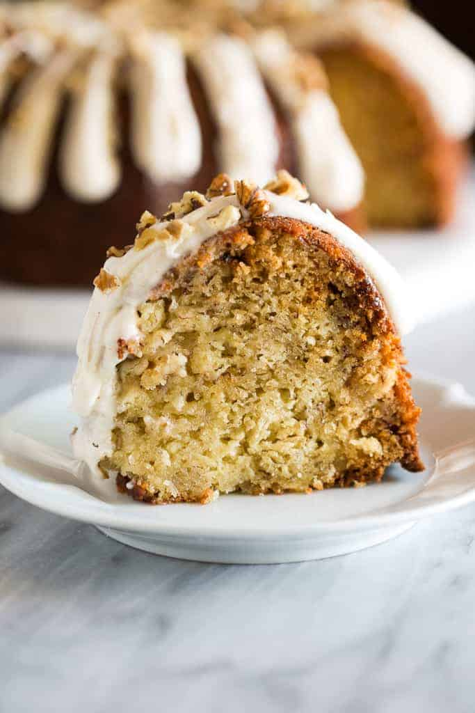

Banana Bundt Cake Recipe

Description
Why I love this cake:
- Easy – It uses basic ingredients I always have on hand and is really quick to make.
- Texture – The texture is similar to banana bread, but it is slightly softer and more cake-like. It is also sweeter than banana bread.
- Cream Cheese Frosting – This addition of my homemade cream cheese frosting just makes this cake perfect! I serve this for special brunches, bridal and baby showers, or dessert.
Ingredients
- 2 cups all-purpose flour
- 1 teaspoon baking powder
- 1 teaspoon baking soda
- 1/4 teaspoon salt
- 1/2 cup butter (1 stick), softened
- 3/4 cup light brown sugar
- 3 teaspoons vanilla extract
- 2 large eggs
- 1 cup buttermilk
- 2 bananas, mashed